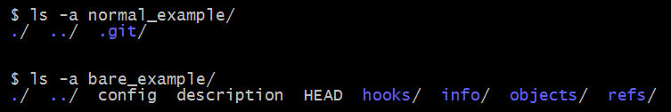

Git Panic
and how to avoid it
/ super hidden extra slides /
Attack of the clones
If you have multiple remotes, use "clone -o"
to set a more meaningful remote name than "origin"
# Use -o to give a meaningful name to the remote
git clone REMOTE_URL -o "remote_name"
Normal vs bare init
# bare repos don't have a working tree
# which is useful for a shared remote
git init vs git init --bare

That's for another branch
Use "-m" if you have changes to your work tree
that you need to move to a different branch
# by default checkout refuses to switch branches
# if your work directory is dirty
# "-m" does a three-way merge between the current branch
# your working tree contents, and the new branch
git checkout -m <commitish>
The stash is like a branch
The dog ate my stash, maaan
# save unfinished work as a new commit
git stash save -p "unfinished work"
# stash list and reflog stash are the same
git stash list
git reflog stash
# stash show and show stash are the same
git stash show -p
git show stash@{0}
# pop vs apply
git stash pop stash@{1}
git stash apply stash@{1}
Example pre-commit hook
# .git/hooks/pre-commit
# hook must be executable
#!/bin/sh
# run linter and tests
# if either commands exit status is non zero
# the commit process will be canceled
npm run lint
npm run test
Example commit message template hook
# .git/hooks/prepare-commit-msg
# hook must be executable
#!/bin/sh
# puts the name of the current branch
# in the commit message template
echo "[`git rev-parse --abbrev-ref HEAD`] \
MESSAGE HERE" > "$1"
Example simple deployment hook
# .git/hooks/post-receive
# hook must be executable
GIT_WORK_TREE=/app_code git checkout master -f
cd /app_code
npm install
npm run build
npm run restart
echo "deployed"